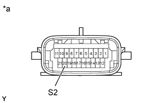
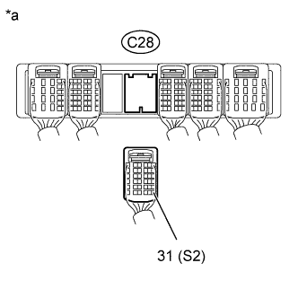

DTC P0976 Shift Solenoid "B" Control Circuit Low (Shift Solenoid Valve S2) |
DTC P0977 Shift Solenoid "B" Control Circuit High (Shift Solenoid Valve S2) |
| DTC Code | DTC Detection Condition | Trouble Area |
| P0976 | ECM detects a short in the solenoid valve S2 circuit 2 times when solenoid valve S2 is operated (1-trip detection logic). |
|
| P0977 | ECM detects an open in the solenoid valve S2 circuit 2 times when solenoid valve S2 is not operated (1-trip detection logic). |
|
| ECM gear shift command | 1st | 2nd | 3rd | 4th | 5th | 6th |
| Shift solenoid valve S2 | ON | ON | OFF | OFF | OFF | ON |
| 1.INSPECT TRANSMISSION WIRE (SHIFT SOLENOID VALVE S2) |
|  |
Disconnect the C24 transmission wire connector.
Measure the resistance according to the value(s) in the table below.
| Tester Connection | Condition | Specified Condition |
| 20 (S2) - Body ground | 20°C (68°F) | 11 to 15 Ω |
| *a | Component without harness connected (Transmission Wire) |
|
| ||||
| OK | |
| 2.CHECK HARNESS AND CONNECTOR (TRANSMISSION WIRE - ECM) |
|  |
Disconnect the C28 ECM connector.
Measure the resistance according to the value(s) in the table below.
| Tester Connection | Condition | Specified Condition |
| C28-31 (S2) - Body ground | 20°C (68°F) | 11 to 15 Ω |
| *a | Front view of wire harness connector (to ECM) |
|
| ||||
| OK | ||
| ||
| 3.INSPECT SHIFT SOLENOID VALVE S2 |
 |
Remove shift solenoid valve S2.
Measure the resistance according to the value(s) in the table below.
| Tester Connection | Condition | Specified Condition |
| Shift solenoid valve S2 connector terminal - Shift solenoid valve S2 body | 20°C (68°F) | 11 to 15 Ω |
Apply 12 V battery voltage to the shift solenoid valve and check that the valve moves and makes an operating noise.
| Measurement Condition | Specified Condition |
| Valve moves and makes an operating noise |
| *a | Component without harness connected (Shift Solenoid Valve S2) |
|
| ||||
| OK | ||
| ||